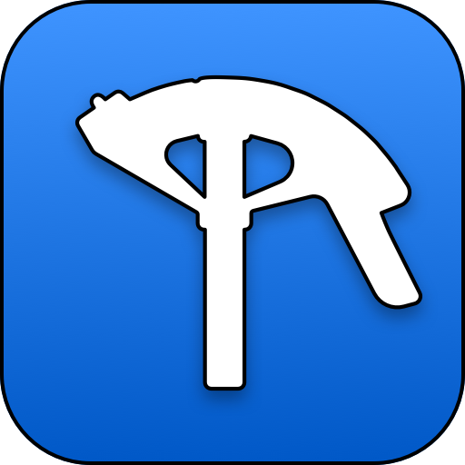

QuickBend
QuickBend x is an advanced conduit bending calculator that was created to be fast and accurate while being visually appealing, innovative, and intuitive. Offering you the most accurate measurements using the centerline radius algorithm based upon the bender that you're using.
This site is an extension of QuickBend. Dedicated to documenting and explaining conduit bending.